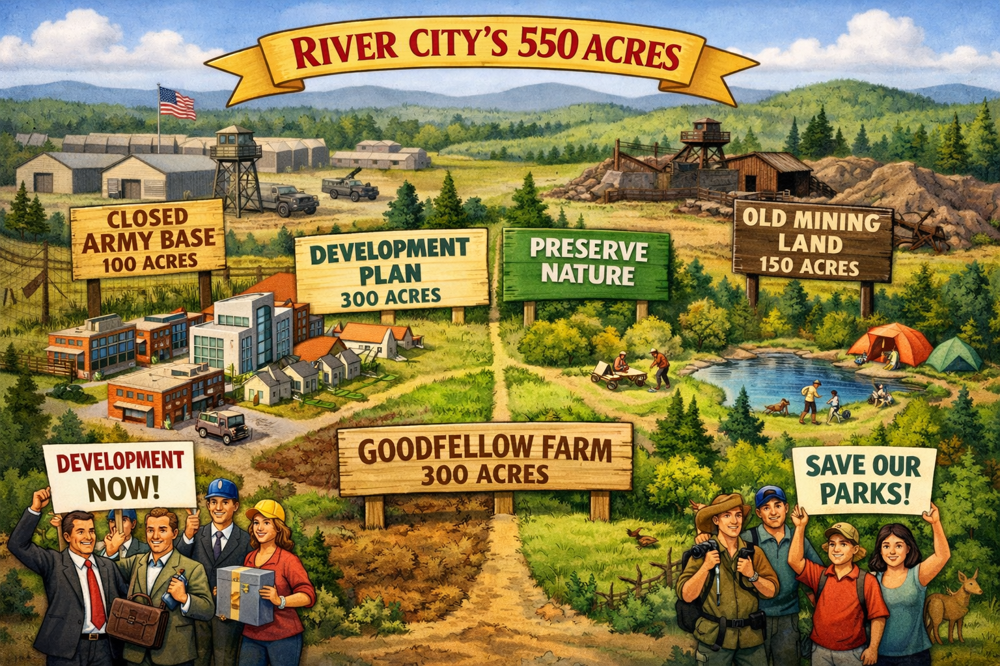

malls and meadows
Land
- 300 acre Mr. Goodfellow
- 100 acre Army
- 150 acres mining
Use
- Recreation/development
- 300 acres for development
- Army base and mine more “attractive”
Compromise
- At most, 200 acres of the army base and mining land will be used for
recreation.
- The amount of army base land used for recreation and the amount of
farmland used for development together must total exactly 100
acres.